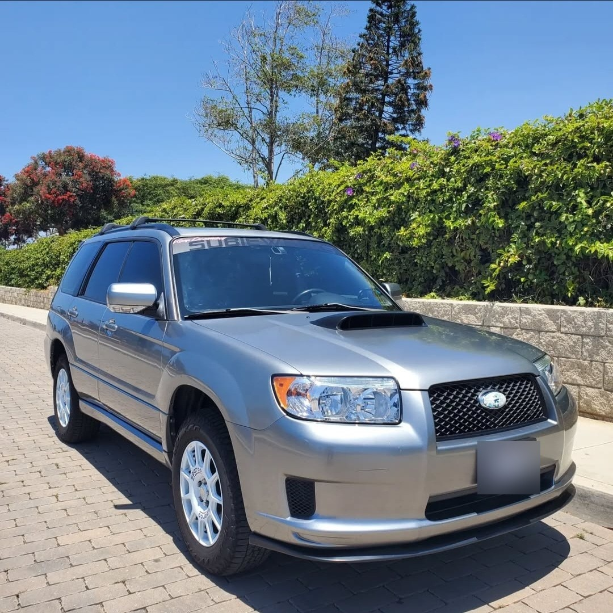
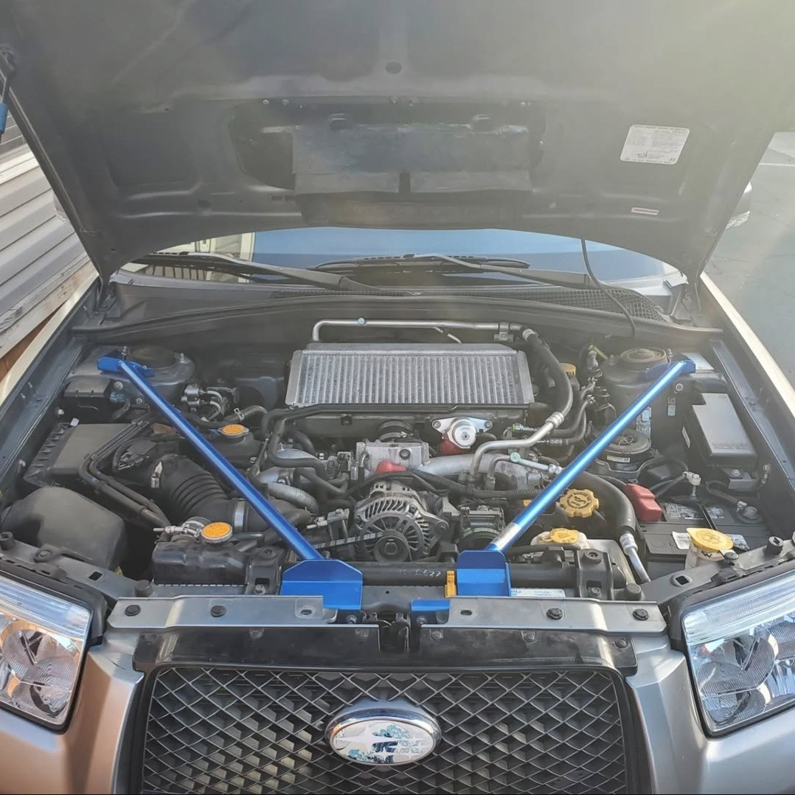

STI Intercooler and Hood Scoop Upgrade
Upgraded to an STI intercooler, hood scoop, and splitter for better cooling, airflow, and future performance tuning potential.
Overview:
Leveraging the parts interchangeability of Subaru vehicles, I enhanced the Forester's performance by integrating the top mount intercooler (TMIC), hood scoop, and splitter from a 2007 Subaru WRX STI. These upgrades are designed to improve air intake efficiency and engine cooling, paving the way for future power enhancements.
Components and Installation:
STI TMIC: Swapped in the STI’s larger intercooler, which facilitates greater airflow and more efficient cooling. This is crucial for maintaining denser air intake, allowing for an optimized engine tune and increased fuel combustion efficiency.
Hood Scoop and Splitter: Installed a taller STI hood scoop, painted in satin black to match the vehicle’s trim, enhancing both aesthetics and functionality. The custom-made splitter directs airflow precisely through the TMIC, maximizing the cooling effect.
Preparation and Painting: The hood scoop underwent thorough sanding, priming, and painting, followed by detailed wet sanding between each coat to ensure a durable and high-quality finish.
Intercooler Maintenance: Dedicated effort to straighten each fin on the intercooler and thoroughly clean all components, ensuring optimal performance.
Future Enhancements:
Water Cooling System: I have prepared the groundwork for installing water sprayers on the TMIC, which will further enhance the cooling capability. Plans include integrating a temperature sensor to automatically activate the sprayers when needed, or enabling manual control. The implementation might utilize a Raspberry Pi for control logic, or potentially integrate with the vehicle’s existing Android head unit, though this requires further exploration.
Outcome:
This upgrade not only boosts the daily performance of the engine by ensuring cooler operational temperatures but also sets the stage for substantial future power gains. By improving the air charge temperature, the engine runs more efficiently, and the groundwork is laid for a more aggressive engine tune if desired.
Reflection:
The process of customizing and enhancing the intercooler system was meticulous and technical, involving both mechanical upgrades and careful aesthetic considerations. The result is a more robust, efficient, and visually striking setup that maintains the integrity and spirit of the Subaru brand while pushing the vehicle's performance boundaries.

